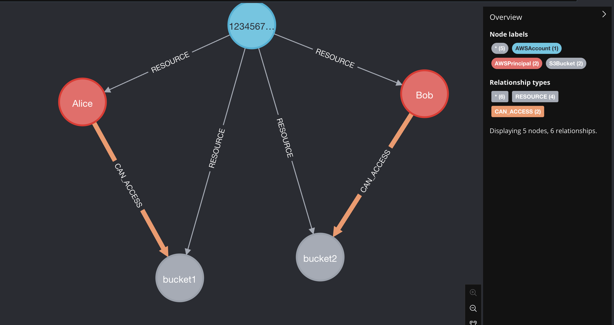

MatchLinks¶
MatchLinks are a way to create relationships between two existing nodes in the graph.
Important: Use MatchLinks Sparingly¶
WARNING: MatchLinks can have significant performance impact and should be used only in specific scenarios.
MatchLinks require a 5-step process that makes them expensive:
Call API A, write Node A to the graph
Call API B, write Node B to the graph
Read Node A from graph
Read Node B from graph
Write relationship between A and B to graph
Prefer standard node schemas + relationship schemas whenever possible. Only use MatchLinks in these two specific scenarios:
When to Use MatchLinks¶
Scenario 1: Connecting Two Existing Node Types When you need to connect two different types of nodes that already exist in the graph, and the relationship data comes from a separate API call or data source.
Scenario 2: Rich Relationship Properties When you need to store detailed metadata on relationships and it doesn’t make sense to break out that data to separate nodes.
When NOT to Use MatchLinks¶
Don’t use MatchLinks for:
Standard parent-child relationships (use
other_relationshipsin node schema)Simple one-to-many relationships (use
one_to_many=Truein standard relationships)When you can define the relationship in the node schema
Performance-critical scenarios
Use MatchLinks only for:
Connecting two existing node types from separate data sources where it is impractical to connect them using standard node schemas and relationships
Relationships with rich metadata where it doesn’t make sense to break out that data to separate nodes
Example¶
Suppose we have a graph that has AWSPrincipals and S3Buckets. We want to create a relationship between an AWSPrincipal and an S3Bucket if the AWSPrincipal has access to the S3Bucket.
Let’s say we have the following data that maps principals with the S3Buckets they can read from:
Define the mapping data
mapping_data = [ { "principal_arn": "arn:aws:iam::123456789012:role/Alice", "bucket_name": "bucket1", "permission_action": "s3:GetObject", }, { "principal_arn": "arn:aws:iam::123456789012:role/Bob", "bucket_name": "bucket2", "permission_action": "s3:GetObject", } ]
Define the MatchLink relationship between the AWSPrincipal and the S3Bucket
@dataclass(frozen=True) class S3AccessMatchLink(CartographyRelSchema): rel_label: str = "CAN_ACCESS" direction: LinkDirection = LinkDirection.OUTWARD properties: S3AccessRelProps = S3AccessRelProps() target_node_label: str = "S3Bucket" target_node_matcher: TargetNodeMatcher = make_target_node_matcher( {'name': PropertyRef('bucket_name')}, ) # These are the additional fields that we need to define for a MatchLink source_node_label: str = "AWSPrincipal" source_node_matcher: SourceNodeMatcher = make_source_node_matcher( {'principal_arn': PropertyRef('principal_arn')}, )
This is a standard
CartographyRelSchemaobject as described in the intel module guide, except that now we have defined asource_node_labeland asource_node_matcher.Define a
CartographyRelPropertiesobject with some additional fields:@dataclass(frozen=True) class S3AccessRelProps(CartographyRelProperties): # <Mandatory fields for MatchLinks> lastupdated: PropertyRef = PropertyRef("UPDATE_TAG", set_in_kwargs=True) # Cartography syncs objects account-by-account (or "sub-resource"-by-"sub-resource") # We store the sub-resource label and id on the relationship itself so that we can # clean up stale relationships without deleting relationships defined in other accounts. _sub_resource_label: PropertyRef = PropertyRef("_sub_resource_label", set_in_kwargs=True) _sub_resource_id: PropertyRef = PropertyRef("_sub_resource_id", set_in_kwargs=True) # </Mandatory fields for MatchLinks> # Add in extra properties that we want to define for the relationship # For example, we can add a `permission_action` property to the relationship to track the action that the principal has on the bucket, e.g. 's3:GetObject' permission_action: PropertyRef = PropertyRef("permission_action")
Note: All MatchLink relationship properties must include these mandatory fields:
lastupdated: PropertyRef = PropertyRef(“UPDATE_TAG”, set_in_kwargs=True)_sub_resource_label: PropertyRef = PropertyRef(“_sub_resource_label”, set_in_kwargs=True)_sub_resource_id: PropertyRef = PropertyRef(“_sub_resource_id”, set_in_kwargs=True)
Load the matchlinks to the graph
load_matchlinks( neo4j_session, S3AccessMatchLink(), mapping_data, UPDATE_TAG=UPDATE_TAG, _sub_resource_label="AWSAccount", _sub_resource_id=ACCOUNT_ID, )
This function automatically creates indexes for the nodes involved, as well for the relationship between them (specifically, on the update tag, the sub-resource label, and the sub-resource id fields).
Run the cleanup to remove stale matchlinks
cleanup_job = GraphJob.from_matchlink(matchlink, "AWSAccount", ACCOUNT_ID, UPDATE_TAG) cleanup_job.run(neo4j_session)
Important: Always implement cleanup for MatchLinks to remove stale relationships.
Enjoy! 
A fully working (non-production!) test example is here:
from dataclasses import dataclass
import time
from neo4j import GraphDatabase
from cartography.client.core.tx import load_matchlinks
from cartography.graph.job import GraphJob
from cartography.models.core.common import PropertyRef
from cartography.models.core.relationships import (
CartographyRelProperties,
CartographyRelSchema,
LinkDirection,
SourceNodeMatcher,
TargetNodeMatcher,
make_source_node_matcher,
make_target_node_matcher,
)
@dataclass(frozen=True)
class S3AccessRelProps(CartographyRelProperties):
# <Mandatory fields for MatchLinks>
lastupdated: PropertyRef = PropertyRef("UPDATE_TAG", set_in_kwargs=True)
_sub_resource_label: PropertyRef = PropertyRef("_sub_resource_label", set_in_kwargs=True)
_sub_resource_id: PropertyRef = PropertyRef("_sub_resource_id", set_in_kwargs=True)
# </Mandatory fields for MatchLinks>
permission_action: PropertyRef = PropertyRef("permission_action")
@dataclass(frozen=True)
class S3AccessMatchLink(CartographyRelSchema):
rel_label: str = "CAN_ACCESS"
direction: LinkDirection = LinkDirection.OUTWARD
properties: S3AccessRelProps = S3AccessRelProps()
target_node_label: str = "S3Bucket"
target_node_matcher: TargetNodeMatcher = make_target_node_matcher(
{'name': PropertyRef('bucket_name')},
)
source_node_label: str = "AWSPrincipal"
source_node_matcher: SourceNodeMatcher = make_source_node_matcher(
{'principal_arn': PropertyRef('principal_arn')},
)
mapping_data = [
{
"principal_arn": "arn:aws:iam::123456789012:role/Alice",
"bucket_name": "bucket1",
"permission_action": "s3:GetObject",
},
{
"principal_arn": "arn:aws:iam::123456789012:role/Bob",
"bucket_name": "bucket2",
"permission_action": "s3:GetObject",
}
]
if __name__ == "__main__":
UPDATE_TAG = int(time.time())
ACCOUNT_ID = "123456789012"
driver = GraphDatabase.driver("bolt://localhost:7687", auth=None)
with driver.session() as neo4j_session:
neo4j_session.run("MATCH (n) DETACH DELETE n")
# Account 123456789012 has principals p1 and p2, and buckets b1, b2, b3.
neo4j_session.run("""
MERGE (acc:AWSAccount {id: $account_id, lastupdated: $update_tag})
MERGE (p1:AWSPrincipal {principal_arn: "arn:aws:iam::123456789012:role/Alice", name:"Alice", lastupdated: $update_tag})
MERGE (acc)-[res1:RESOURCE]->(p1)
MERGE (p2:AWSPrincipal {principal_arn: "arn:aws:iam::123456789012:role/Bob", name:"Bob", lastupdated: $update_tag})
MERGE (acc)-[res2:RESOURCE]->(p2)
MERGE (b1:S3Bucket {name: "bucket1", lastupdated: $update_tag})
MERGE (acc)-[res3:RESOURCE]->(b1)
MERGE (b2:S3Bucket {name: "bucket2", lastupdated: $update_tag})
MERGE (acc)-[res4:RESOURCE]->(b2)
SET res1.lastupdated = $update_tag, res2.lastupdated = $update_tag, res3.lastupdated = $update_tag, res4.lastupdated = $update_tag
""", update_tag=UPDATE_TAG, account_id=ACCOUNT_ID)
load_matchlinks(
neo4j_session,
S3AccessMatchLink(),
mapping_data,
UPDATE_TAG=UPDATE_TAG,
_sub_resource_label="AWSAccount",
_sub_resource_id=ACCOUNT_ID,
)
cleanup_job = GraphJob.from_matchlink(S3AccessMatchLink(), "AWSAccount", ACCOUNT_ID, UPDATE_TAG)
cleanup_job.run(neo4j_session)
Example 2: Adding Extended Properties to Relationships¶
This example shows how to use MatchLinks to add rich properties to relationships between nodes. We’ll use AWS Inspector findings and packages as an example, where the relationship includes important metadata like remediation information, fixed versions, and file paths.
Define the mapping data with properties
finding_to_package_mapping = [
{
"findingarn": "arn:aws:inspector2:us-east-1:123456789012:finding/abc123",
"packageid": "openssl|0:1.1.1k-1.el8.x86_64",
"filePath": "/usr/lib64/libssl.so.1.1",
"fixedInVersion": "0:1.1.1l-1.el8",
"remediation": "Update OpenSSL to version 1.1.1l or later",
"sourceLayerHash": "sha256:abc123...",
"sourceLambdaLayerArn": "arn:aws:lambda:us-east-1:123456789012:layer:my-layer:1",
},
{
"findingarn": "arn:aws:inspector2:us-east-1:123456789012:finding/def456",
"packageid": "openssl|0:1.1.1k-1.el8.x86_64",
"filePath": "/usr/lib64/libssl.so.1.1",
"fixedInVersion": "0:1.1.1l-1.el8",
"remediation": "Update OpenSSL to version 1.1.1l or later",
"sourceLayerHash": "sha256:abc123...",
"sourceLambdaLayerArn": None,
},
{
"findingarn": "arn:aws:inspector2:us-east-1:123456789012:finding/abc123",
"packageid": "curl|7.61.1-12.el8.x86_64",
"filePath": "/usr/bin/curl",
"fixedInVersion": "7.61.1-14.el8",
"remediation": "Update curl to version 7.61.1-14.el8 or later",
"sourceLayerHash": None,
"sourceLambdaLayerArn": None,
}
]
Define the relationship properties with multiple fields
@dataclass(frozen=True)
class InspectorFindingToPackageRelProperties(CartographyRelProperties):
# Mandatory fields for MatchLinks
lastupdated: PropertyRef = PropertyRef("lastupdated", set_in_kwargs=True)
_sub_resource_label: PropertyRef = PropertyRef("_sub_resource_label", set_in_kwargs=True)
_sub_resource_id: PropertyRef = PropertyRef("_sub_resource_id", set_in_kwargs=True)
# Business properties from the vulnerable package data
filepath: PropertyRef = PropertyRef("filePath")
fixedinversion: PropertyRef = PropertyRef("fixedInVersion")
remediation: PropertyRef = PropertyRef("remediation")
sourcelayerhash: PropertyRef = PropertyRef("sourceLayerHash")
sourcelambdalayerarn: PropertyRef = PropertyRef("sourceLambdaLayerArn")
Define the MatchLink relationship schema
@dataclass(frozen=True)
class InspectorFindingToPackageMatchLink(CartographyRelSchema):
target_node_label: str = "AWSInspectorPackage"
target_node_matcher: TargetNodeMatcher = make_target_node_matcher(
{"id": PropertyRef("packageid")},
)
source_node_label: str = "AWSInspectorFinding"
source_node_matcher: SourceNodeMatcher = make_source_node_matcher(
{"id": PropertyRef("findingarn")},
)
properties: InspectorFindingToPackageRelProperties = (
InspectorFindingToPackageRelProperties()
)
direction: LinkDirection = LinkDirection.OUTWARD
rel_label: str = "HAS_VULNERABLE_PACKAGE"
Load the matchlinks with properties
load_matchlinks(
neo4j_session,
InspectorFindingToPackageMatchLink(),
finding_to_package_mapping,
lastupdated=update_tag,
_sub_resource_label="AWSAccount",
_sub_resource_id=account_id,
)
Cleanup stale relationships
cleanup_job = GraphJob.from_matchlink(
InspectorFindingToPackageMatchLink(),
"AWSAccount", # _sub_resource_label
account_id, # _sub_resource_id
update_tag,
)
cleanup_job.run(neo4j_session)